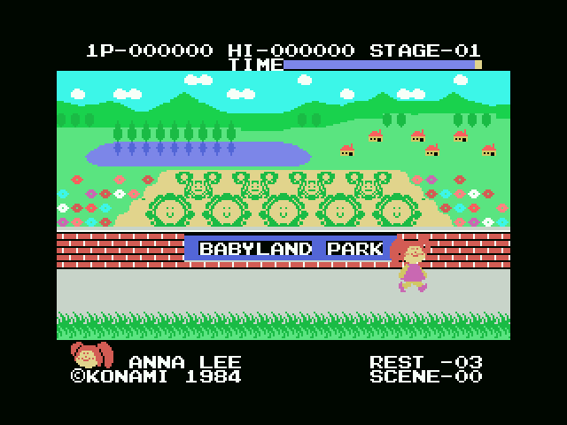

Your Cabbage Patch Kid walks through Babyland Park, where the babies grow in cabbages. The park's sign is written into the cartridge itself, seventeen tiles at 0x6BE5.

The menu does not lead straight into the game. Pressing the fire key on PLAY SELECT picks one of four options —one or two players, joystick or keyboard— and then two set-up screens come up, both driven by the same four keys: up and down change what is under the cursor, right moves the cursor, and space ends.
First you choose the kid. Two bytes, 0xE05B and 0xE05C, hold the row and the column of each half of the figure; 0x78C9 reads them and places five sprites with them.
Then you name it. Ten letters at 0xE05D, which 0x7968 cycles round between blank and Z. Out of the factory the name is ANNA LEE, and it is there in the player's start-up values at 0x44A3, right next to the lives and the clock. With two players the screen comes round twice, once for each (0x426B).
The name is not decoration: 0x79F5 paints those ten letters at the bottom of the play screen, and they stay there for the whole game.
| top left | the score of whoever is playing, 1P- or 2P- |
| top centre | HI-, the record |
| top right | STAGE-nn |
| under them | the TIME bar |
| bottom left | the kid's face and its name |
| bottom right | REST-nn, the lives left, and SCENE-nn |
STAGE and SCENE are two different numbers: the stage is the round and the scene is the screen you are on inside it.
0xE050, three at the start (0x44A3).0xE043 and 0xE046), and the record in 0xE040. SUMA_PUNTOS (0x4651) tops out at 999999.0xE052, which moves up by 20,000 each time (0x4688); when there are no more to give it is left at 0xFF.0xE055, which TIEMPO (0x5F13) drains and paints as the bar. Below 0x10 it beeps once every 64 frames.The second player's whole block lives at 0xE080, and ESTADO_13_CAMBIO_TURNO swaps the two blocks when the turn changes, so the rest of the code always works on the same place without knowing whose turn it is. The label at the top left, 1P- or 2P-, blinks every 32 frames for whoever is playing (0x4735).